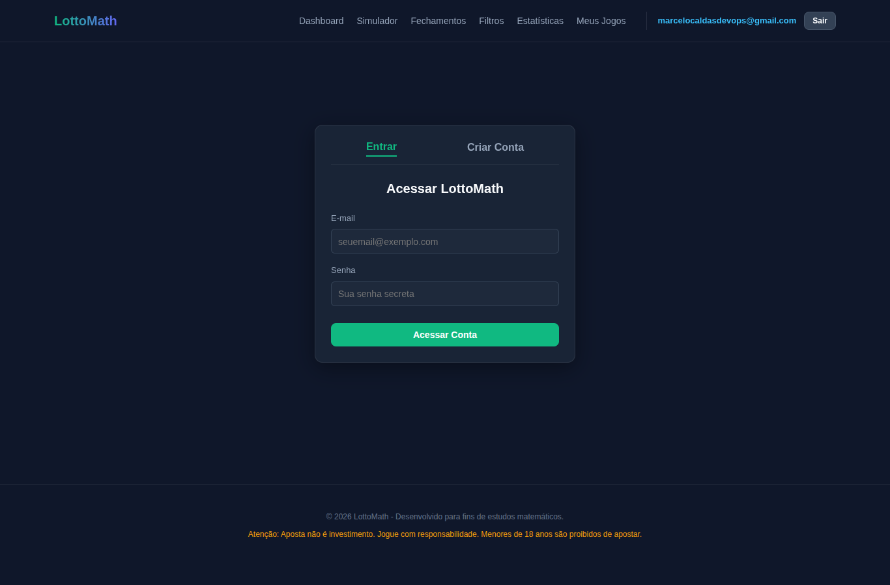
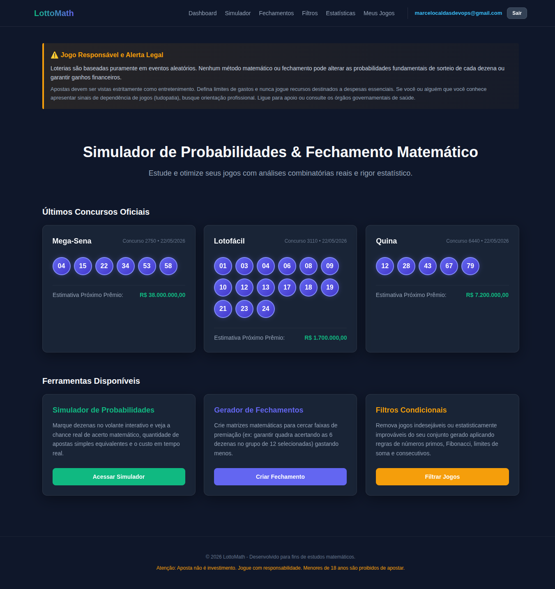
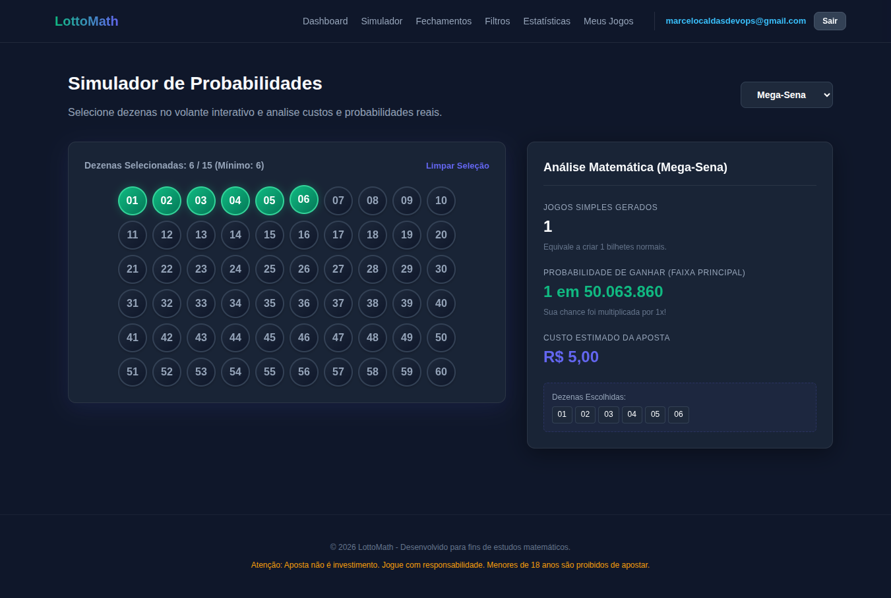
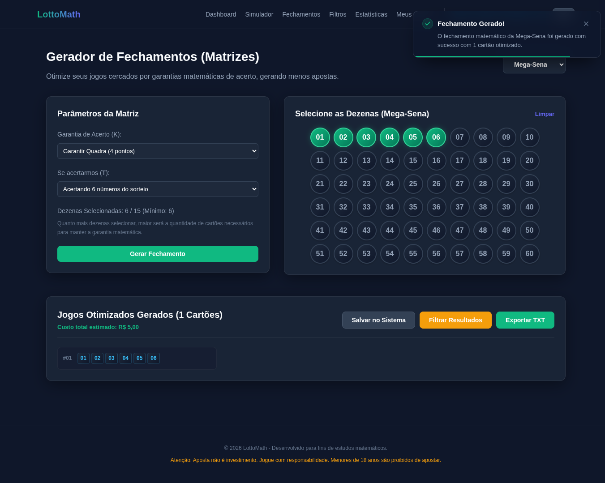
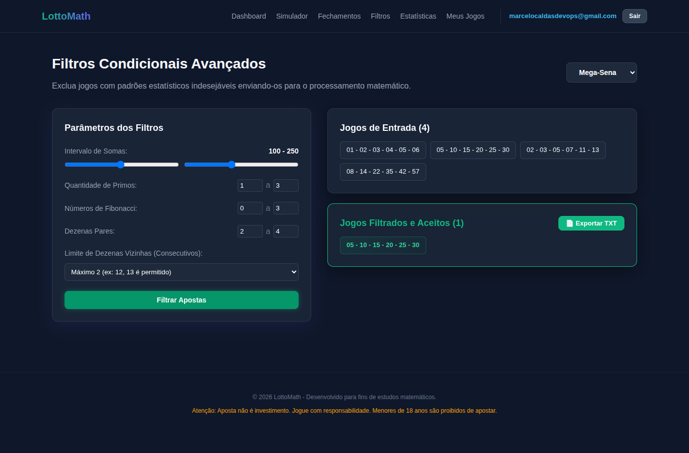
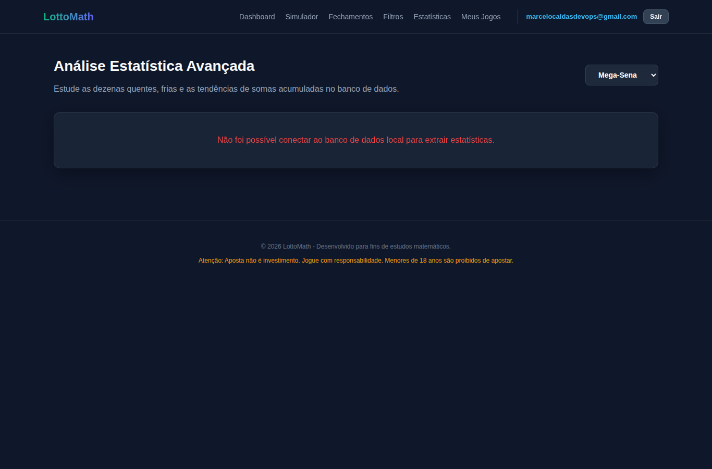
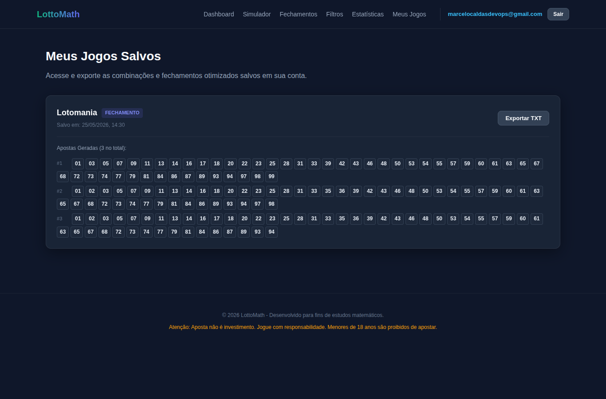

Login, simulação, fechamento, filtros e jogos salvos responderam com sucesso.
Documentação visual
Menu de Uso do Sistema LottoMath
Catálogo navegável das telas testadas com Playwright, usando a documentação
principal e os prints gerados em docs-sistema.
7
telas documentadas
HTML e CSS estáticos
API de estatísticas e favicon retornaram 404 durante a navegação.
O menu original do sistema documentado apresentou rolagem horizontal em 390px.
Sumário
Telas documentadas
Login
Permite autenticar o usuário no sistema.
Ver telaDashboard
Apresenta alerta de jogo responsável, concursos e atalhos.
Ver telaSimulador
Calcula probabilidade, custo e jogos equivalentes.
Ver telaFechamentos
Gera matrizes de apostas otimizadas por garantia.
Ver telaFiltros
Aplica critérios matemáticos aos jogos de entrada.
Ver telaEstatísticas
Área de análise estatística; API documentada retornou 404.
Ver telaMeus Jogos
Lista jogos salvos e permite exportação em TXT.
Ver tela/login
1. Login
Tela usada para autenticar usuários e liberar o acesso às funcionalidades protegidas.
Elementos principais
- Campo E-mail: identifica o usuário.
- Campo Senha: recebe a senha de acesso.
- Botão Acessar Conta: envia as credenciais para autenticação.
- Abas Entrar e Criar Conta.
Validação: login realizado com sucesso e redirecionamento para o Dashboard.

/
2. Dashboard
Página inicial com aviso legal, últimos concursos oficiais e atalhos para as ferramentas.
Elementos principais
- Alerta de jogo responsável e aviso legal.
- Últimos concursos oficiais de Mega-Sena, Lotofácil e Quina.
- Cards de acesso para Simulador, Fechamentos e Filtros.
- Menu autenticado com Meus Jogos e Sair.
Validação: rota retornou 200 e carregou o conteúdo principal.

/simulador
3. Simulador
Tela para selecionar dezenas no volante e calcular análise matemática da aposta.
Elementos principais
- Seletor de modalidade: Mega-Sena, Lotofácil, Quina, Lotomania e Dupla-Sena.
- Volante numérico com dezenas selecionáveis.
- Contador de dezenas selecionadas.
- Painel de jogos simples, probabilidade e custo estimado.
Validação: seleção 01 a 06 gerou probabilidade 1 em 50.063.860 e custo R$ 5,00.

/fechamento
4. Fechamentos
Gera fechamentos matemáticos a partir de dezenas selecionadas e parâmetros de garantia.
Elementos principais
- Seletores de modalidade, garantia K e condição T.
- Volante de dezenas e contador de seleção.
- Botão Gerar Fechamento.
- Ações Salvar no Sistema, Filtrar Resultados e Exportar TXT.
Validação: fechamento Mega-Sena gerou 1 cartão otimizado com custo R$ 5,00.

/filtros
5. Filtros
Aplica regras condicionais em jogos de entrada e mantém apenas as combinações aprovadas.
Elementos principais
- Filtro por intervalo de somas.
- Filtros por primos, Fibonacci, pares e vizinhos.
- Lista de jogos de entrada.
- Lista de jogos filtrados e botão Exportar TXT.
Validação: filtros padrão aceitaram 1 jogo entre 4 entradas.

/estatisticas
6. Estatísticas
Tela de análise estatística por modalidade, dependente da API local de estatísticas.
Elementos principais
- Seletor de modalidade.
- Área para dados estatísticos calculados.
- Mensagem de indisponibilidade quando a API não responde.
Atenção: GET /api/v1/analise/mega-sena/estatisticas retornou 404.

/jogos-salvos
7. Meus Jogos
Tela autenticada para visualizar apostas e fechamentos salvos na conta do usuário.
Elementos principais
- Card de jogo salvo com modalidade, tipo e data.
- Prévia das apostas salvas.
- Botão Exportar TXT.
- Menu autenticado com botão Sair.
Validação: /jogos-salvos retornou 200; /meus-jogos retornou 404.
